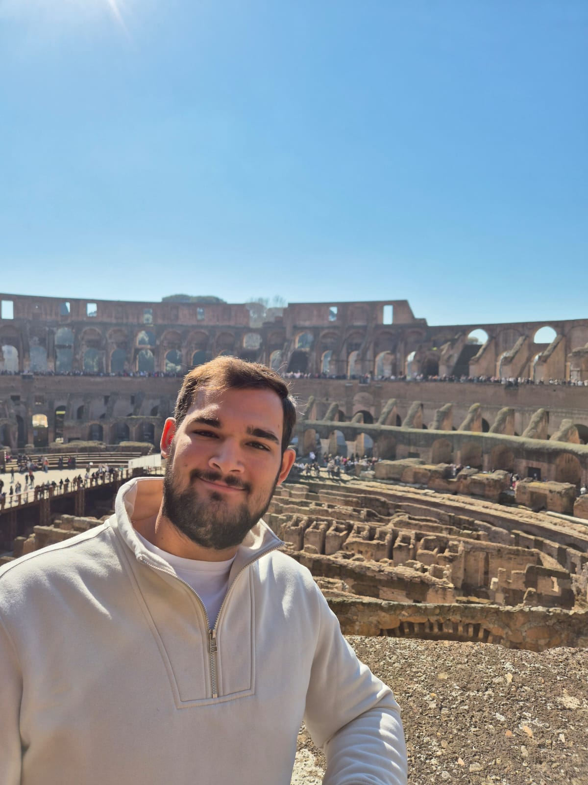

About

I'm a Computer Science student at USAL (Buenos Aires) and an AI Fluency intern at FlyRank. A month of functional QA testing at a1qa taught me how systems actually break — tracing bugs past their symptoms to root cause, not just logging what looked wrong. Now I'm building GraphSAST, a static analysis tool that traces those same failure patterns automatically, at the code level, before a human has to find them by hand.
I'm drawn to the intersection of QA and tooling because they're the same instinct pointed in different directions: one finds what's broken, the other builds the thing that finds it next time.
Get in touch